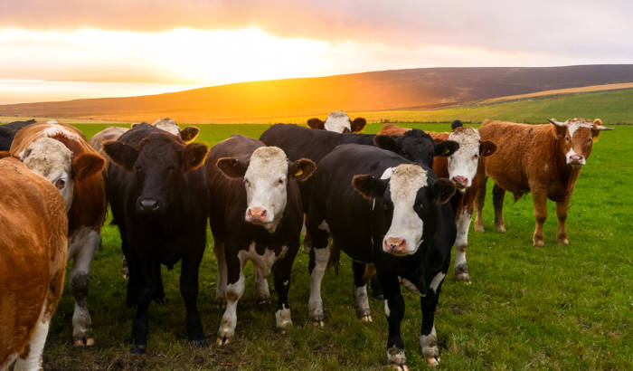
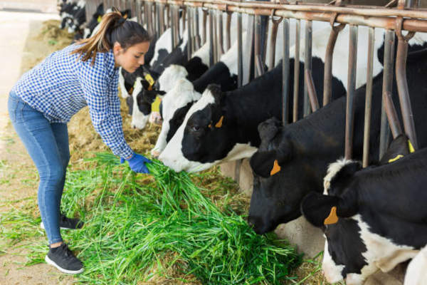
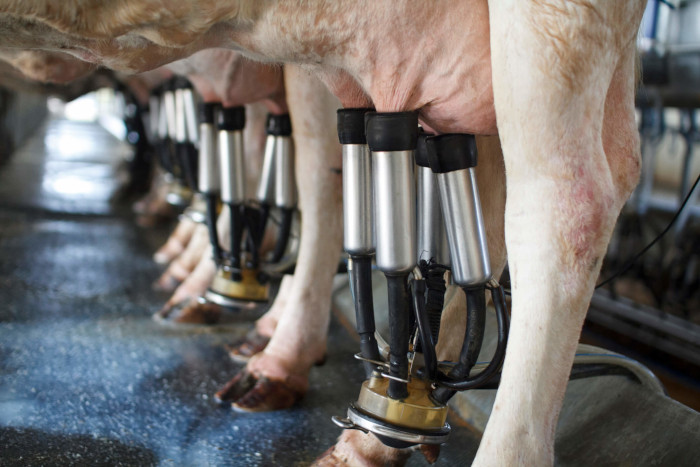
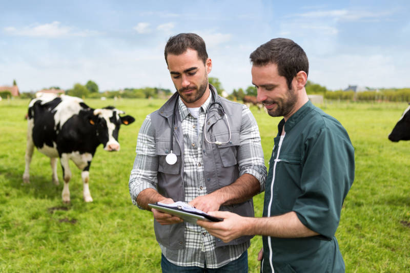

O que é Bovinocultura?
Bovinocultura é a área da zootecnia que lida com animais de médio e grande porte e ruminantes, que são os bois e vacas, são a família de animais que possuem o maior rebanho no brasil, estando em uma média de 218,2 milhões de cabeça de gado em 2022, possuindo um crescimento de 1,5% desde 2016, são animais que precisam de grandes áreas para poder ter mais animais, no Brasil existem aproximadamente 200 milhões de hectares de áreas de pastagem, infelizmente muitas destas áreas estão degradadas, portanto precisam de manejo, a Bovinocultura se divide em duas áreas, bovinocultura de leite: Se tratando da criação dos animais visando uma grande produção de leite e venda deste leite que destinará em produtos laticínios, e a Bovinocultura de carne que produz o animal e faz ele ganhar peso o suficiente para o abate e vender a carne para açougues e frigoríficos.
O que o zootécnico faz nessa área?
- Maneja os bovinos
- Melhora a genética do animal
- Análises e pesquisas
- Preparar rações para os animais
- Realizar testes de equipamentos
- Certificação e controle dos produtos
- Cuida da saúde do animal
- Detectar problemas comportamentais nos animais
- Adaptar animais em diferentes climas
- Trazer bem estar aos animais
Problemas na produção
A bovinocultura possui um grande uso de pastagens o que envolve o uso do solo, podendo ser feito o desmatamento para ocupação de áreas de pastagem, o que é ruim para o meio ambiente, outros problemas estão nos próprios animais, por possuírem grande porte eles causam compactação no solo, impedindo a infiltração podendo ajudar no início dos processos erosivos, também estes animais soltam gases metano o que ajuda no aquecimento global, então o manejo destes animais tem que ser bem feito levando em consideração estas possibilidades.
Sub-areas
Bovinocultura de Leite:
Esta área se resume em melhorar a genética do animal ao máximo possível visando a maior produção, pode ser feita em sistema intensivo ou extensivo ou uma mistura dos dois tipos, é feito a reprodução do animal e retirando o leite diariamente até semanas antes do nascimento do bezerro.
'Principais tipos de raça
- Holandesa
- Girolando
- Jersey
É uma raça Européia adaptada para climas frios, é a raça que possui a melhor genética para produção de leite, produzindo cerca de 70 litros de leite diariamente, por isso seu preço e o seu DNA são bem caros.
Raça gerada a partir do cruzamento do animal da raça Gir e um animal de raça Holandesa, possuindo assim uma genética boa, mas não tão apurada assim que produz uma quantidade de leite muito considerável, e por conta deste cruzamento é bem adaptada para climas um pouco mais quentes.
'É uma raça Europeia também que possui uma boa produção de leite, possui uma grande longevidade, é uma raça que possui um pequeno porte comparado com as outras, e ainda produzem bem em qualquer clima

Produtos
- Leite
- Queijo
- Manteiga
- Iogurte
- Cremes
- Sorvetes
Produto mais comum, extremamente nutritivo e amplamente consumido por quase toda a população de alguma forma, ele é o produto base de diversos produtos a seguir.
Feito a partir do leite e alguns químicos para poder solidificar e dar consistência, é amplamente utilizado em diversos pratos.
Produto a base de leite utilizado em basicamente tudo, tanto para cozinhar ou fritar, mas comumente utilizar no pão.
Bebida fermentada muito comum nas manhãs de muitas pessoas, bebida com baixo teor de gordura quando é natural, e ainda é possível de se infusionar com frutas e outros ingredientes.
Creme de leite é a base de muitos cremes e muito comum em várias receitas, é bastante utilizado em pratos.
Sobremesa cremosa e gelada muito consumida no país, feita a base de creme de leite e pode ser adicionada chocolate e frutas para dar sabor a sobremesa.

Equipamentos
A tecnificação do campo é o futuro, por que mais tecnologias vão sendo criadas e aprimoradas, sendo mais acessíveis para os produtores, e pode não parecer mas elas têm um impacto muito grande na produção, um grande exemplo sãos as máquinas de ordenha de leite fazendo o trabalho da ordenha de maneira mais rápida e eficiente. Os equipamentos são fundamentais para aumentar a produção, como a implementação de aspersores, ventiladores e até mesmo borrifadores de água são muito eficientes para acalmar e refrescar o animal um tempo antes da ordenha, fazendo que ele solte mais litros de leite.
Tendências
As maiores Tendências são de aumentar o bem estar dos animais, assim eles ficam mais calmos e consequentemente aumentam a produção do rebanho, outras tendências desta área são a aprimoração da genética, utilização de rações de alta qualidade para melhorar a nutrição do animal, cuidar da saúde do animal para não transmitir doenças para o animal evitando contaminação dos produtos, e a tecnificação da propriedade, assim deixando os trabalhos mais fáceis e aumentando a produção também, fazer o trabalho a mão em pequenas propriedades não é algo mais tão comum de se ver com a acessibilidade de novas tecnologias.
Bovinocultura de Carne:
Tipos de raça
A área da bovinocultura de carne é uma área que propõe o engordamento do animal, utilizando uma boa genética e proporcionando alimento nutritivo favorecendo seu ganho de peso, para ser trabalhada em uma boa carne com pouca gordura.
- Angus
- Nelore
- Wagyu
É uma raça de boa aptidão no brasil oferece uma carne de boa qualidade e ainda possibilita uma alta fertilidade, possui uma grande facilidade em ganhar peso.
Raça bem adaptada para o clima brasileiro, é a raça que mais possui rebanhos no Brasil, possui uma ótima estrutura resultando em uma carne de boa qualidade, e possui um temperamento dócil o que facilita muito no manejo do animal.
Um boi de raça japonesa, não possui adaptabilidade ao clima tropical do brasil onde as temperaturas são mais altas, mas possui a carne mais cara do mundo custando em torno de 600 reais o quilo, isso por conta da sua qualidade, é um animal que consegue um peso com facilidade, propiciando uma gordura de marmoreio entremeio da carne, assim melhorando seu gosto e valorizando a sua carne.

Características da carne
É uma carne de ótimo valor nutricional, caracterizada pela sua cor vermelha brilhante, possui uma maciez, o que instiga a pessoa a comprar, possui tipos de corte que podem ter mais gordura que outras, o que influencia no consumo da pessoa, ou na maneira com que ela irá preparar o alimento com aquela carne.
Exportação
O Brasil é um dos países que mais exporta tanto a carne bovina, quanto o animal inteiro, estando sempre em alta no mundo, exportando principalmente para a China, porém este foco na exportação causa um aumento no preço interno da carne no animal, gerando algumas reclamações de consumidores.